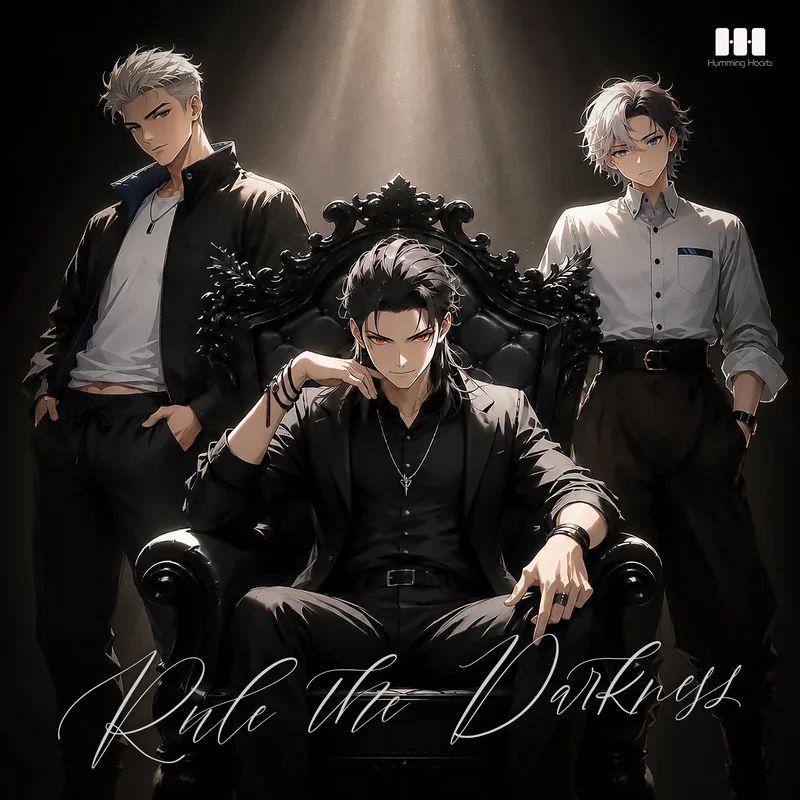
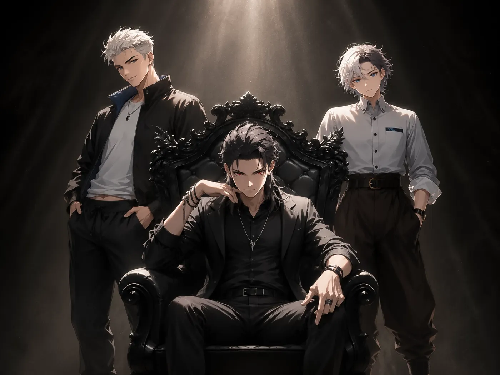

Release2026.09.25Lyrics烏丸蓮司Music筧傑Rule The Darkness
Blackveil Harmonic

カラスたちの宴 × ロック
衝動のままに叫ぶ、漆黒のスリーピースバンド

同じ児童養護施設で幼少期を過ごした烏丸蓮司、笠木涼佑、筧傑による、三人組ロックバンド。
同じ孤独を知る三人にとって、音楽はただの表現ではなく、自分たちの居場所を鳴らすためのもの。曲作りでは全員が対等に声をぶつけ合い、何色にも染まらない自分たちの音を作り上げていく。
最初は蓮司のカリスマ性に惹かれるファンが多いものの、涼佑の男気や、傑のそっけない対応に気づけば抜け出せなくなるファンも増えている。

Release2026.09.25Lyrics烏丸蓮司Music筧傑Blackveil Harmonic